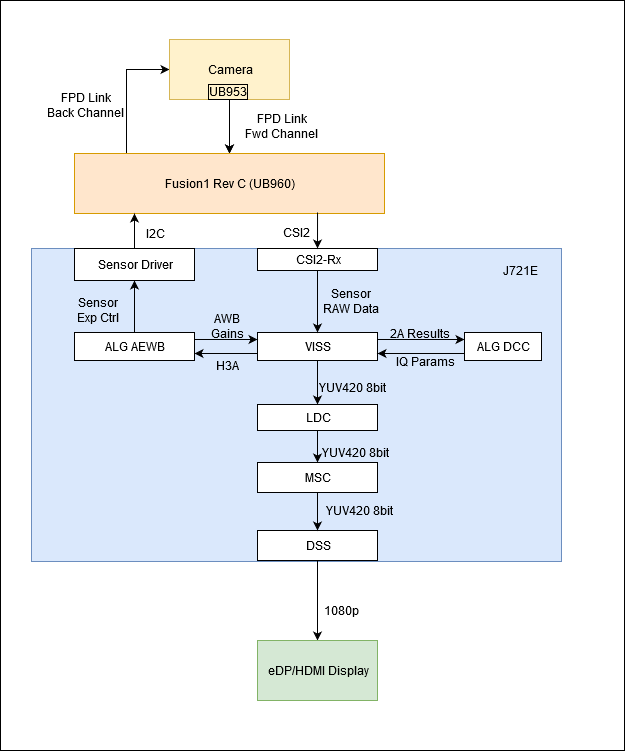

Introduction
This application demonstrates the use of VISS node and TI's 2A (AE & AWB) algorithm. It captures RAW images from the image sensor, processes it in VPAC and displays using Display Sub-System. It also processes H3A data for AE and AWB algorithms.
Supported plaforms
| Platform | Linux x86_64 | Linux+RTOS mode | QNX+RTOS mode | SoC |
| Support | YES | YES | YES | J721e / J721S2 / J784S4 |
Supported image sensors
| Sensor | Data Format | Resolution | Frame Rate(s) |
| IMX390 | Bayer RAW12 HDR | 1936x1096 | 30, 60 |
| AR0233 | Bayer RAW12 HDR | 1920x1280 | 30 |
| AR0820 | RCCB RAW12 HDR | 3840x2160 | 27 |
| UB9xx Test Pattern | Bayer RAW12 | 3840x2160 | 39 |
| UB9xx Test Pattern | YUV422 (UYVY) | 640x480 | 29 |
| GW5_AR0233 | YUV422 (UYVY) | 1920x1080 | 30 |
Data flow (RAW12 input)

Steps to run the application on J7 EVM (Linux + RTOS mode)
- Build the application and related libraries as mentioned in Build Instructions for Linux+RTOS mode.
- Connect camera board on any port of Fusion1 board. Application will prompt the user for port selection.
- Use the is_interactive flag to run the demo in an interactive mode which allows the user to select sensor, processing options and print performance characteristics on the UART console.
- Run the app as shown below
cd /opt/vision_apps
source ./vision_apps_init.sh
./vx_app_single_cam.out
- The output is displayed through DSS on HDMI or eDP display - Display interface selection through compile time srtting in the file platform/j721s2/rtos/common/app_cfg_mcu2_0.h.
Steps to run the application on J7 EVM (QNX + RTOS mode)
- Build the application and related libraries as mentioned in Build Instructions for QNX+RTOS mode.
- Connect camera board on any port of Fusion1 board. Application will prompt the user for port selection.
- Use the is_interactive flag to run the demo in an interactive mode which allows the user to select sensor, processing options and print performance characteristics on the UART console.
- Run the app as shown below
cd /ti_fs/vision_apps
. ./vision_apps_init.sh
./vx_app_single_cam.out
- The output is displayed through DSS on HDMI or eDP display - Display interface selection through compile time setting in the file platform/j721s2/rtos/common/app_cfg_mcu2_0.h.
Steps to run the application on Linux PC (PC Emulation mode)
- Build the application and related libraries as mentioned in Build Instructions for PC emulation mode.
- Create a folder with the following subdirectories.
cd ${PSDKR_PATH}/vision_apps/apps/basic_demos/app_single_cam/x86_test_data/
mkdir -p test_root/input/ test_root/dcc_bins/
-# Copy raw images to input folder. cp ${VX_TEST_DATA_PATH}/psdkra/app_single_cam/IMX390_001/input1.raw ${PSDKR_PATH}/vision_apps/apps/basic_demos/app_single_cam/x86_test_data/test_root/input/img_0000.raw
cp ${VX_TEST_DATA_PATH}/psdkra/app_single_cam/IMX390_001/input2.raw ${PSDKR_PATH}/vision_apps/apps/basic_demos/app_single_cam/x86_test_data/test_root/input/img_0001.raw
- Copy dcc binaries (if any) to dcc_bins folder.
cp -r ${VX_TEST_DATA_PATH}/psdkra/app_single_cam/IMX390_001/*.bin ${PSDKR_PATH}/vision_apps/apps/basic_demos/app_single_cam/x86_test_data/test_root/dcc_bins/
- Create a cfg file specifying raw properties and usecase preferences. One example is included in PSDK at
${PSDKR_PATH}/vision_apps/apps/basic_demos/app_single_cam/x86_test_data/001/
- Note
- Make sure test_folder_root is pointing to the correct path in the cfg file
-
test_folder_root ${PSDKR_PATH}/vision_apps/apps/basic_demos/app_single_cam/x86_test_data/test_root
- Execute single camera PC app with cfg file as the argument. For e.g.
cd ${PSDKR_PATH}/vision_apps/
./out/PC/x86_64/LINUX/release/vx_app_single_cam --cfg apps/basic_demos/app_single_cam/x86_test_data/test_root/x86_app_IMX390.cfg
- The output folders will be created and output images will be saved in the corresponding folders.
- Known Issue : LDC node does not support DCC in PC Emulation mode. ldc_enable must be set to 0 in cfg file.


 1.8.14
1.8.14